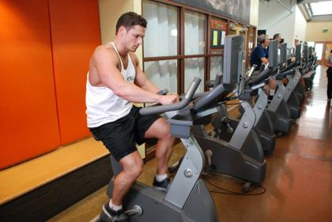
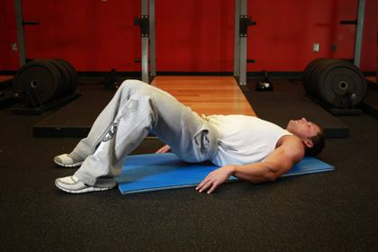
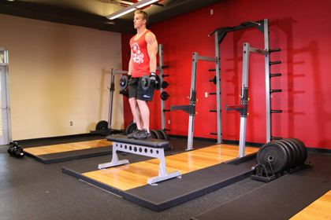
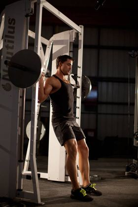
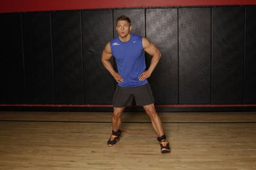
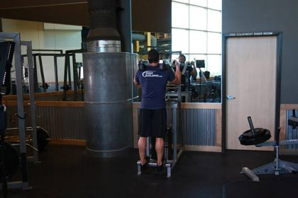
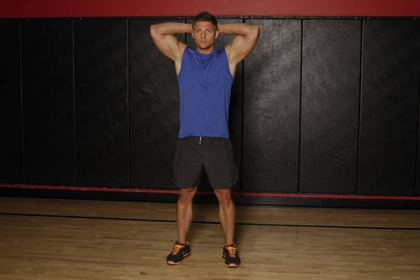
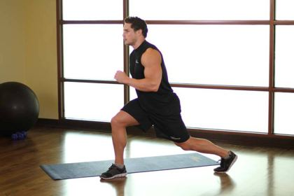

Knee osteoarthritis (wear & tear): rehab exercises & recovery plan
Gradual changes in the knee cartilage and bone, more common after 40 or after an old injury. It causes pain and stiffness, but the knee responds very well to strength training — exercise is the main treatment.
Common in: Everyday life, over-40s, ex-athletes · Body area: Knee · Updated November 2026
Education, not diagnosis. This guide explains how this injury is usually rehabilitated. It cannot tell you what injury you have — see a doctor or physiotherapist to confirm it, especially after a fall, a pop or surgery.
Follow this plan day by day — free. The IKJON app turns it into a calendar with animated demos, timers and a pain diary. No account, no ads.
Start the Knee osteoarthritis planTypical signs
- Stiffness after rest that eases within 30 minutes
- Pain on stairs, long walks or getting up from a chair
- Grinding or creaking
- Swelling after a busy day
See a doctor first if you have any of these
- Hot, red, swollen knee with fever
- Sudden inability to take weight
- Knee locking
How long does recovery take?
It depends on how serious the injury is. These are typical plan lengths:
| Severity | Usual description | Typical plan |
|---|---|---|
| Mild Pain with long walks | Daily life fine, sport or long walks hurt. | 60 days (about 9 weeks) |
| Moderate Pain most days | Stairs and standing up are painful. | 90 days (about 3 months) |
| Severe Pain at rest | Daily pain; also discuss options with your doctor. | 120 days (about 4 months) |
The rehab plan, stage by stage
Move to the next stage only when you meet its “move on when” checks — not just because the weeks have passed.
Ease pain & move
Goal: Reduce pain and stiffness, wake up the thigh muscles.

Stationary bike10 min
Cardio · Knee range, fitness- Seat high enough that the knee is almost straight at the bottom.
- Low resistance.
- Steady pedalling.
Tip: Rock back and forth first if a full turn is not yet possible.
Quad sets3 × 10
Isometric · Quadriceps activation · 5 s hold- Sit or lie with the leg straight and a rolled towel under the knee.
- Tighten the thigh to press the back of the knee into the towel.
- Hold, then relax fully.
Tip: Watch the kneecap glide up as the muscle switches on.
Heel slides2 × 15
Mobility · Knee bending range- Lie on your back.
- Slide the heel towards your bottom as far as comfortable.
- Slide back to straight.
Tip: Use a towel around the foot to help if needed.
Sit to stand3 × 8
Strength · Legs, everyday strength- Sit on the front of a chair, feet flat.
- Lean forward and stand up without using your hands.
- Sit back down slowly.
Tip: The most useful leg exercise for daily life.
Seated knee extension3 × 10
Strength · Quadriceps- Sit tall on a chair.
- Straighten one knee fully and squeeze the thigh for 2 s.
- Lower slowly.
Tip: Add an ankle weight to progress. After ACL surgery, ask your surgeon when this is allowed.

Glute bridge3 × 10
Strength · Glutes, hamstrings- Lie on your back, knees bent, feet flat.
- Squeeze glutes and lift hips into a straight line.
- Lower slowly.
Tip: Push through heels; don't arch the low back.

Brisk walk10 min
Cardio · Fitness, tissue health- Walk on flat ground at a pace that raises breathing.
- Keep posture tall and arms swinging.
Tip: For low back pain, walking is one of the best treatments.
Move on when:
- Walking 20 min with pain 3/10 or less
- Sit to stand ×10 without hands
Build strength
Goal: Stronger quads and hips to take load off the joint.
Sit to stand3 × 12
Strength · Legs, everyday strength- Sit on the front of a chair, feet flat.
- Lean forward and stand up without using your hands.
- Sit back down slowly.
Tip: The most useful leg exercise for daily life.

Step-ups3 × 10
Strength · Quads, glutes- Face a low step (10–20 cm).
- Step up with the working leg and stand tall.
- Step down slowly with the other leg.
Tip: Raise the step height as strength improves.
Seated knee extension3 × 12
Strength · Quadriceps · add ankle weight- Sit tall on a chair.
- Straighten one knee fully and squeeze the thigh for 2 s.
- Lower slowly.
Tip: Add an ankle weight to progress. After ACL surgery, ask your surgeon when this is allowed.

Mini squat (0–45°)3 × 12
Strength · Quads, glutes- Feet hip-width, hold a support if needed.
- Sit back a little as if to a high chair, knees to about 45°.
- Push through both heels to stand.
Tip: Knees track over the 2nd toe, not caving in.
Side-lying hip abduction3 × 12
Strength · Glute medius- Lie on your side, bottom knee bent.
- Lift the straight top leg slightly behind the body.
- Lower slowly, toes pointing forward.
Tip: Strong hip abductors reduce knee 'caving in'.

Band side walk3 × 10
Strength · Glute medius- Band around the knees or ankles, knees slightly bent.
- Step sideways, keeping tension on the band.
- 10 steps one way, then back.
Tip: Toes point forward; don't let the knees cave in.

Calf raise3 × 15
Strength · Calves- Stand on both feet, hold a support.
- Rise high onto the balls of the feet.
- Lower slowly over 3 s.
Tip: Move to the edge of a step for more range.

Single-leg balance3 × 30 s
Balance · Balance, ankle reflexes- Stand on one leg, knee soft.
- Progress: eyes closed → on a pillow → catching a ball.
- Stay tall.
Tip: Balance training reduces repeat ankle sprains.
Move on when:
- Stairs easier
- Single-leg stand 30 s
Stay strong
Goal: Keep the gains for life.

Squat3 × 10
Strength · Quads, glutes- Feet shoulder-width (hold a weight at the chest to progress).
- Sit down between the heels to a pain-free depth.
- Stand tall, squeezing glutes.
Tip: 3 s down, 3 s up builds strength in tendons too.

Split squat3 × 8
Strength · Quads, glutes, balance- Long stride stance, back heel up.
- Lower the back knee straight down towards the floor.
- Drive up through the front heel.
Tip: Front knee may go over the toes; keep it in line with the foot.
Forward step-down3 × 8
Strength · Eccentric quad control- Stand on a step on the working leg.
- Slowly lower the other heel to touch the floor in front.
- Push back up without locking the knee hard.
Tip: Knee stays in line with the foot. Use a mirror.
Band side walk3 × 12
Strength · Glute medius- Band around the knees or ankles, knees slightly bent.
- Step sideways, keeping tension on the band.
- 10 steps one way, then back.
Tip: Toes point forward; don't let the knees cave in.
Single-leg balance3 × 30 s
Balance · Balance, ankle reflexes- Stand on one leg, knee soft.
- Progress: eyes closed → on a pillow → catching a ball.
- Stay tall.
Tip: Balance training reduces repeat ankle sprains.
Brisk walk30 min
Cardio · Fitness, tissue health- Walk on flat ground at a pace that raises breathing.
- Keep posture tall and arms swinging.
Tip: For low back pain, walking is one of the best treatments.
Move on when:
- 30 min walking comfortably
- Keep strength work 2–3×/week
Important: Mild pain (up to 3–4/10) during exercise is fine if it settles within 24 hours. Losing weight, if overweight, also reduces knee pain.
What the research says
Strength of evidence: Strong
- Land-based exercise reduces knee pain and improves function, with effects similar to anti-inflammatory tablets — high-quality evidence.
- Exercise, education and weight management are the core recommended treatments.
Sources: Fransen et al. 2015, Cochrane review (54 trials); Bannuru et al. 2019, Osteoarthritis and Cartilage (OARSI guidelines)
Common questions
How long does knee osteoarthritis take to heal?
It depends on severity. Mild: about 60 days (about 9 weeks). Moderate: about 90 days (about 3 months). Severe: about 120 days (about 4 months). Move on by meeting each stage's checks, not by the calendar alone.
When should I see a doctor?
See a doctor or physiotherapist to confirm the injury, and get help urgently if you notice: Hot, red, swollen knee with fever; Sudden inability to take weight; Knee locking.
Should exercises hurt?
Mild discomfort up to about 3–4 out of 10 that settles within 24 hours is usually acceptable. Stop if pain is sharp, goes above 5 out of 10, or swelling increases afterwards.
Ready to start? Open the plan in the IKJON app and it guides you day by day, with demos for every exercise.
Start the plan free